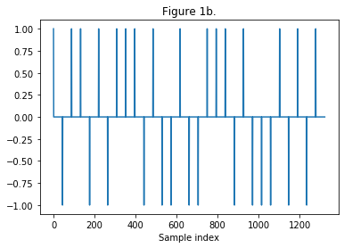
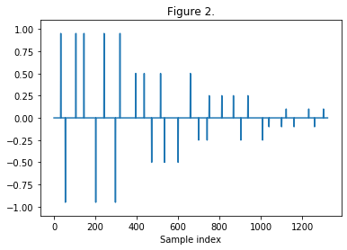

Introduction
Decorrelation refers to the process of transforming an audio source signal into multiple output signals with different waveforms from each other, but with the same sound as the source signal [1]. This is important in the spacial reproduction of sounds where a mono signal is output through multiple loudspeakers such as in a surround system [1]. In music production, decorrelation produces differences between the left and right channels, which creates the perception of stereo width and space. This, however, may come at the cost of potential coloration artifacts. Velvet-Noise Decorrelation (VND) attempts to minimize these artifacts as well as computation cost while reducing the correlation of the outputs as much as possible [2].
Traditional decorrelation methods convolve a short, exponentially decaying white noise sequence with the audio input signal [2]. This method may cause some latency, as it requires the use of the FFT for fast convolution [2]. Velvet noise refers to a sparse, random sequence that consists of samples of values of either -1, 0, or 1 [2]. These impulses form a short sequence, typically 30 milliseconds, to satisfy a density parameter with the spacing between non-zero impulses also randomized [2], [3], [4]. One complication of VND is the transient smearing artifacts caused by impulses located toward the end of the Velvet-Noise Sequence (VNS) after convolution. To mitigate this, we can apply a segmented decay envelope to the convolution function and logarithmically distribute the impulses across the VNS [2]. With segmented decay, impulses that occur later in the VNS contribute less to the output signal [2]. With logarithmic impulse distribution, we concentrate the impulses towards the start of the VNS [2].

Figure 1: Steps to create a velvet-noise sequence:
(a) Create a sequence of evenly spaced impulses. For decorrelation, a density of 1000 impulses per second is sufficient [2].
(b) Randomly assign the impulse values to 1 or -1.
(c) Randomize the intervals between each impulse. Figure 2: To mitigate any audible smearing of transients, apply a segmented decay envelope to the velvet-noise sequence [2]. Set the specific number of segments and coefficient values manually [2].
Figure 3: VNS with logorithmically distributed impulses. With the impulses concentrated at the start of the sequence, the transients are further preserved [2].
Implementation
Because the VNS contains only nonzero values of 1 or -1, we can implement a multiplication-free convolution [2]. This, combined with the sparse nature of the sequence, allows for latency-free decorrelation [2]. In [4], Schlecht et al. provide audio examples with a stereo delay effect, commonly referred to as the Haas Effect (HE), to decorrelate the audio further. Typically, using the HE tends to ruin phase coherence. However, when applied with VND, the HE can further decorrelate audio while keeping each channel in phase with each other. To avoid transient smearing when played back through mono systems, we use a delay value of less than 20ms. Here, we apply the HE in both the Mid-Side domain and the Left-Right domain to further refine the balance between decorrelation and phase coherence.

Figure 4: The decorrelator's signal flow.
Audio Examples
Original mono signal
Drums
Guitar
Vocal
Viola
Decorrelated stereo signal
Drums
Guitar
Vocal
Viola
References
[1] “What is ‘Decorrelation’? | Sweetwater”. https://www.sweetwater.com/insync/decorrelation/ (accessed Aug. 10, 2020).
[2] “Velvet-Noise Decorrelator”. http://www.dafx17.eca.ed.ac.uk/papers/DAFx17_paper_96.pdf (accessed Aug. 04, 2020).
[3] “Reverberation Modeling Using Velvet Noise”. http://users.spa.aalto.fi/mak/PUB/AES_Jarvelainen_velvet.pdf (accessed Aug. 04, 2020).
[4] “Optimized Velvet-Noise Decorrelator - AudioLabs”. https://www.audiolabs-erlangen.de/resources/2018-DAFx-VND (accessed Aug. 04, 2020).